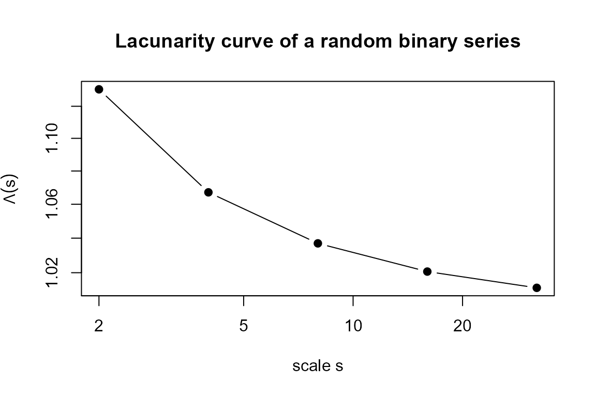
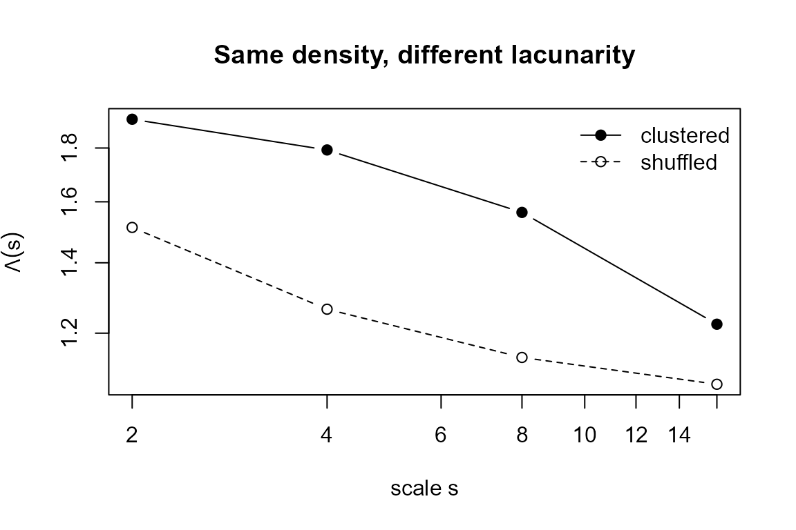
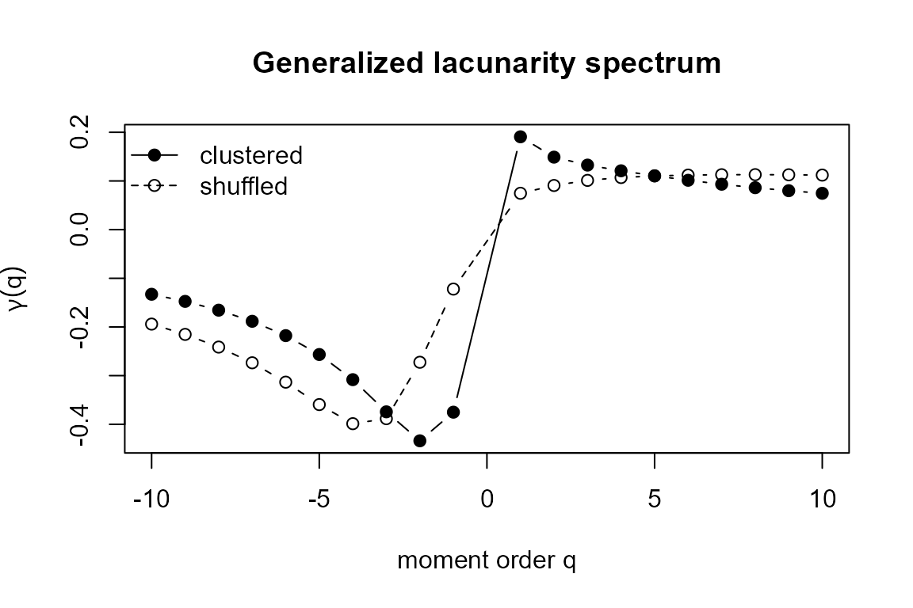

Lacunarity and generalized lacunarity for binary time series
Source:vignettes/lacunarity.Rmd
lacunarity.RmdOverview
Lacunarity is a scale-dependent measure of translational heterogeneity: it quantifies how the gaps (the voids, or runs of zeros) of a pattern are distributed in space. It was introduced by Mandelbrot and made operational by Allain and Cloitre (1991) through the gliding-box algorithm, later established as a general technique for the analysis of spatial patterns by Plotnick et al. (1996). Its defining feature is that two patterns with the same density of occupied sites can have very different lacunarities if those sites are clustered differently. Lacunarity is therefore a natural complement to fractal dimension and to simple autocorrelation when describing the texture of binary signals.
The lacunarity package implements two estimators for
one-dimensional binary series
with
:
Theory
Gliding-box masses
Fix a box (a contiguous window) of size and slide it one observation at a time along the series. At each of the positions the box mass is the number of occupied sites it covers, that is, a running sum of the series over a window of width . Sliding the box produces an empirical distribution of masses , the relative frequency of boxes carrying mass at scale . The package evaluates the masses on dyadic scales , , with .
Moment generating function
All the estimators are built from the
-th
moment of the box-mass distribution,
computed by the helper
zqs(). The argument mat is a two-column table
with the distinct masses x and their frequencies
freq; internally the frequencies are normalised to
probabilities
.
The lacunarity index
The lacunarity at scale is the ratio of the second moment to the square of the first moment of the box masses, The last identity shows that always, and that lacunarity is exactly one plus the squared coefficient of variation of the box masses:
- means every box of size carries the same mass — the pattern is translationally homogeneous at that scale;
- signals heterogeneity (gappiness), growing with the spread of the masses.
As the box grows, local fluctuations average out and
typically decays towards
.
For self-similar sets the lacunarity follows a power law (Allain and Cloitre 1991)
whose lacunarity scaling
exponent
measures how fast the heterogeneity decays with scale: large
means a quickly homogenising pattern, while
marks a scale-invariant one. lac() estimates the exponent
y from the slope of
on
fitted through the origin, and also returns the vector Ds
of lacunarities
and the vector s of scales.
Generalized lacunarity
Vernon-Carter et al. (2009) generalised
the index by replacing the fixed orders
and
with the generalized moments
,
giving
The exponent
keeps the units of
those of a ratio of quadratic masses for every
,
so all orders are directly comparable. The order
acts as a magnifying glass: large positive
emphasises the dense (high-mass) boxes, while negative
emphasises the sparse (low-mass) boxes. As in the ordinary case,
self-similar sets obey a power law
,
and genlac() estimates the generalized scaling
exponent
from the (origin-constrained) slope of
on
.
The whole curve
is a lacunarity spectrum. Following Vernon-Carter et al. (2009), a set is
monofractal when
is essentially constant in
— small and large gaps organise the same way — and
multilacunar when
varies appreciably with
,
revealing a richer arrangement of small and large gaps.
genlac() returns the scales s, the orders
q, the exponents yq
()
and the full matrix Dqs of
values.
Worked examples
A single series
We simulate a Bernoulli series with ones and compute its lacunarity.
x <- rbinom(2000, size = 1, prob = 0.8)
rx <- lac(x)
rx
#> $y
#> [1] 0.01311362
#>
#> $Ds
#> [1] 1.130717 1.067124 1.036955 1.020647 1.011371
#>
#> $s
#> [,1]
#> [1,] 2
#> [2,] 4
#> [3,] 8
#> [4,] 16
#> [5,] 32Ds decreases towards
as the scale grows, the signature of an essentially homogeneous
(gap-poor) pattern. The decay is clearest on a log–log plot:
plot(rx$s, rx$Ds, log = "xy", type = "b", pch = 19,
xlab = "scale s", ylab = expression(Lambda(s)),
main = "Lacunarity curve of a random binary series")
abline(h = 1, lty = 2, col = "grey50")
Same density, different texture
The point of lacunarity is that density alone does not determine
texture. Below, z is a strongly clustered
sequence (blocks of ones and zeros) and w is a random
shuffle of z: both have exactly the same
number of ones, hence the same density, but a very different spatial
organisation.
block <- c(rep(c(rep(1, 8), rep(0, 8)), 60),
rep(c(rep(1, 16), rep(0, 16)), 60))
z <- block
w <- sample(block) # same ones, gaps reshuffled
mean(z) == mean(w) # identical density
#> [1] TRUE
lz <- lac(z)
lw <- lac(w)
c(clustered = lz$y, shuffled = lw$y)
#> clustered shuffled
#> 0.19072431 0.07468284The clustered series has a substantially larger lacunarity at every scale:
ylim <- range(lz$Ds, lw$Ds)
plot(lz$s, lz$Ds, log = "xy", type = "b", pch = 19, ylim = ylim,
xlab = "scale s", ylab = expression(Lambda(s)),
main = "Same density, different lacunarity")
lines(lw$s, lw$Ds, type = "b", pch = 1, lty = 2)
legend("topright", c("clustered", "shuffled"),
pch = c(19, 1), lty = c(1, 2), bty = "n")
Although z and w are indistinguishable by
their mean,
cleanly separates the blocky texture from the random one — exactly the
information that density and most second-order summaries miss.
The generalized lacunarity spectrum
Finally we compare the spectra
of the clustered and the random series with genlac().
gz <- genlac(z)
gw <- genlac(w)
plot(gz$q, gz$yq, type = "b", pch = 19,
xlab = "moment order q", ylab = expression(gamma(q)),
main = "Generalized lacunarity spectrum",
ylim = range(gz$yq, gw$yq))
lines(gw$q, gw$yq, type = "b", pch = 1, lty = 2)
legend("topleft", c("clustered", "shuffled"),
pch = c(19, 1), lty = c(1, 2), bty = "n")
The clustered series produces a spectrum that varies markedly with — a multilacunar texture in the terminology of Vernon-Carter et al. (2009), where small and large gaps scale differently. The shuffled series gives a nearly flat spectrum, the monofractal signature of a structureless, single-scale gap distribution.
Practical notes
- The input must be a binary vector of
0s and1s. If the series is all zeros or all ones, there are no gaps to measure and the functions return a warning. - Scales are dyadic () and capped by the longest run of ones, so longer and more structured series expose more scales and a more informative spectrum.
- Lacunarity is most useful as a comparative tool: compare a series against a reshuffled or simulated null with the same density to decide whether its texture is genuinely heterogeneous.